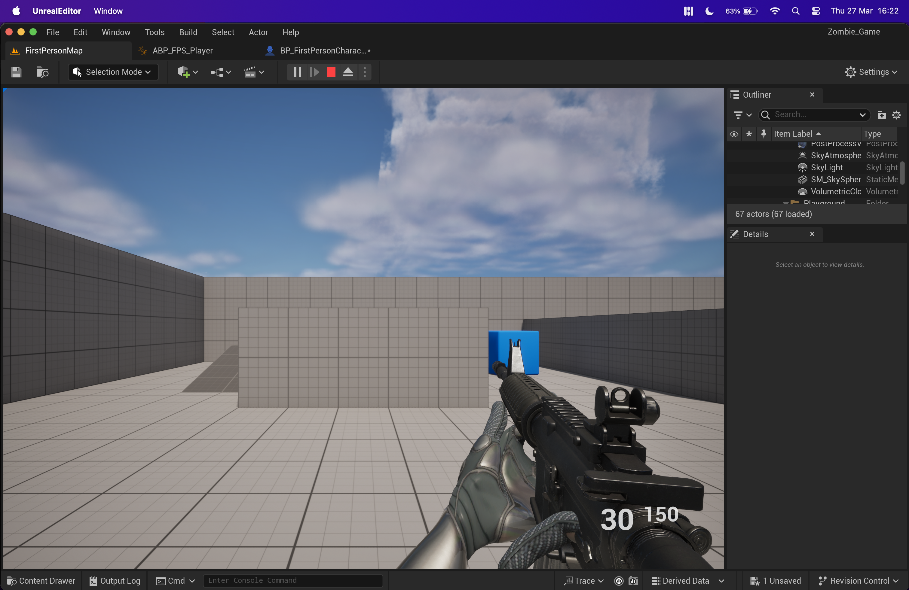

First-person interactions
Exploring readable player feedback and survival interactions in a 3D environment.
Games Designer | Gameplay Programmer

Deadzone: Outbreak is a 3D FPS action-survival game set in a zombie-infested environment. In this prototype, I am developing core mechanics using Unreal Engine with a mix of Blueprints and C++ (pending further optimisation). The game challenges you to manage resources, build barricades, and face relentless zombie waves – culminating in an epic boss battle.
In Deadzone: Outbreak, I am exploring 3D FPS mechanics with an emphasis on atmospheric audio and intense survival gameplay. The prototype focuses on resource management, enemy AI, and dynamic combat interactions, inspired by titles like COD and The Last of Us.
Building a wave-based zombie FPS prototype with crafting and resource management. Developing AI behavior, player interactions, and survival progression using a hybrid Blueprint/C++ approach. Balancing immersive audio, visuals, and feedback systems to deliver high-tension gameplay. This project is a learning-focused deep dive into Unreal Engine systems and FPS design fundamentals.
Behind the game
Deadzone: Outbreak is an evolving Unreal Engine FPS survival prototype. This page describes systems explored during development, not a claim that every feature is finished.
Exploring readable player feedback and survival interactions in a 3D environment.
Investigating enemy reactions, encounters and wave-based challenges in Unreal Engine.
Using Blueprint gameplay logic while exploring how C++ could support future refinement and optimisation.
Prototype in progress: features and implementation may change as development continues.
← Back to all projects